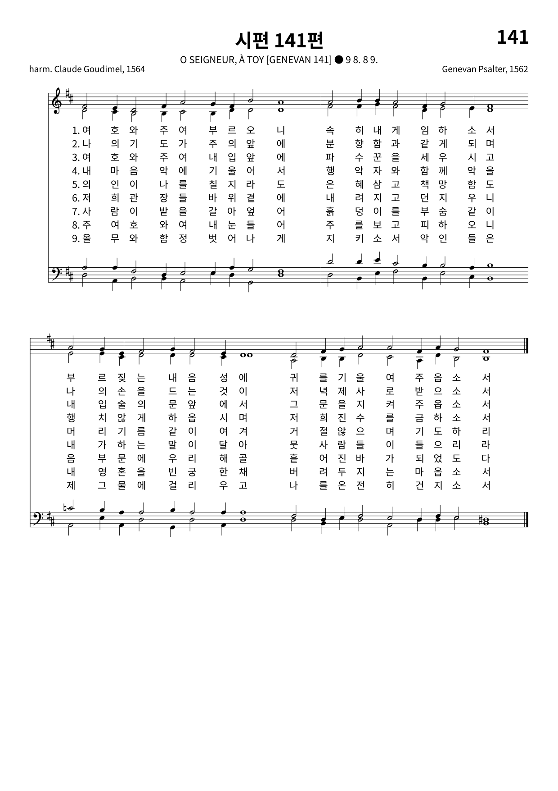

시편 141편
O SEIGNEUR, À TOY [GENEVAN 141] · 9 8. 8 9.
곡조: Genevan Psalter, 1562 · 화성: Claude Goudimel, 1564 · 가사: 개역한글판 시편 141편 편역(AI 초벌 편역판 · 신학 감수 전) · 9절
악보 PDF MusicXML(출력용) MusicXML(반주용, 전주·반복 포함) 개역한글 시편 141편 읽기
악보
← 시편 140편 B 목록반주 재생(준비 중)시편 142편 →
가사
1절
여호와 주여 부르오니
속히 내게 임하소서
부르짖는 내 음성에
귀를 기울여 주옵소서
여호와 주여 부르오니
속히 내게 임하소서
부르짖는 내 음성에
귀를 기울여 주옵소서
2절
나의 기도가 주의 앞에
분향함과 같게 되며
나의 손을 드는 것이
저녁 제사로 받으소서
나의 기도가 주의 앞에
분향함과 같게 되며
나의 손을 드는 것이
저녁 제사로 받으소서
3절
여호와 주여 내 입 앞에
파수꾼을 세우시고
내 입술의 문 앞에서
그 문을 지켜 주옵소서
여호와 주여 내 입 앞에
파수꾼을 세우시고
내 입술의 문 앞에서
그 문을 지켜 주옵소서
4절
내 마음 악에 기울어서
행악자와 함께 악을
행치 않게 하옵시며
저희 진수를 금하소서
내 마음 악에 기울어서
행악자와 함께 악을
행치 않게 하옵시며
저희 진수를 금하소서
5절
의인이 나를 칠지라도
은혜 삼고 책망함도
머리 기름 같이 여겨
거절 않으며 기도하리
의인이 나를 칠지라도
은혜 삼고 책망함도
머리 기름 같이 여겨
거절 않으며 기도하리
6절
저희 관장들 바위 곁에
내려지고 던지우니
내가 하는 말이 달아
뭇 사람들이 들으리라
저희 관장들 바위 곁에
내려지고 던지우니
내가 하는 말이 달아
뭇 사람들이 들으리라
7절
사람이 밭을 갈아 엎어
흙덩이를 부숨 같이
음부 문에 우리 해골
흩어진 바가 되었도다
사람이 밭을 갈아 엎어
흙덩이를 부숨 같이
음부 문에 우리 해골
흩어진 바가 되었도다
8절
주 여호와여 내 눈 들어
주를 보고 피하오니
내 영혼을 빈궁한 채
버려두지는 마옵소서
주 여호와여 내 눈 들어
주를 보고 피하오니
내 영혼을 빈궁한 채
버려두지는 마옵소서
9절
올무와 함정 벗어나게
지키소서 악인들은
제 그물에 걸리우고
나를 온전히 건지소서
올무와 함정 벗어나게
지키소서 악인들은
제 그물에 걸리우고
나를 온전히 건지소서